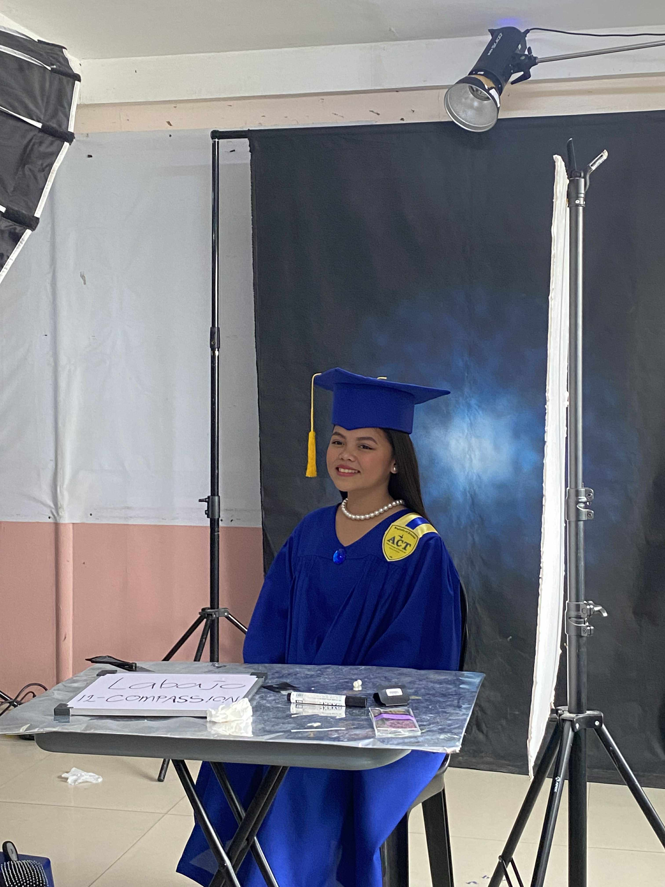

I am from Grade 12 - Compassion. I am friendly and approachable, and I respect others' opinions. I enjoy working with my classmates and helping create a positive and supportive environment. I believe in open communication, kindness, and respecting every voice.
I am committed to finishing all my studies with dedication, giving my best effort in every single subject to build a strong foundation for my future. My ultimate goal centers around both career and family: I aspire to become a successful businesswoman, build my own enterprise from the ground up, and use the success I achieve to support and help my loved ones, ensuring that my hard work benefits not just myself but also those who matter the most of me.
I have a variety of hobbies that keep me engaged and entertained - I love watching movies, with a particular passion for Filipino action films that showcase local storytelling and talent. I also enjoy scrolling through TikTok, where I follow dance trends and seek out funny content that brightens my day. When it comes to my values, kindness and respect are at the core of how I interact with others, and I firmly believe in putting family first, along with upholding hard work and integrity in everything I do. Beyond this, my interests span several exciting areas: I stay updated on tech trends, am fascinated by game character design, follow local Filipino content creators who inspire me, and am actively learning about business and entrepreneurship to build knowledge for my future
💖 Thank you for visiting my page 💖